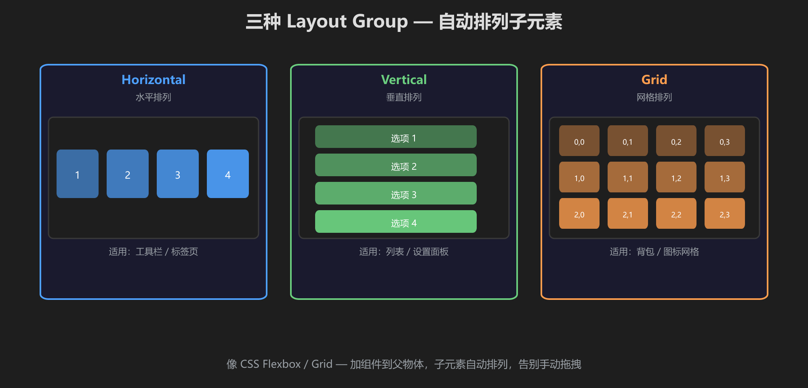
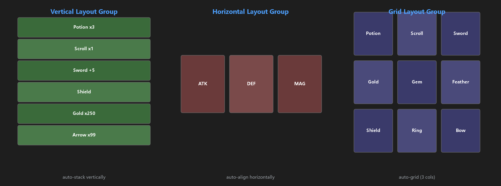
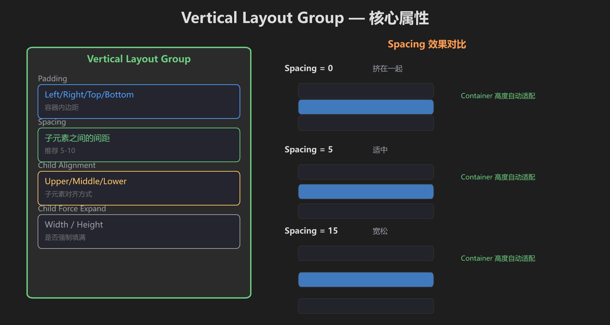
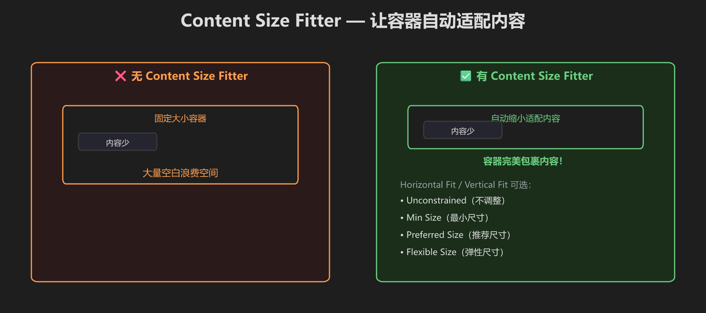
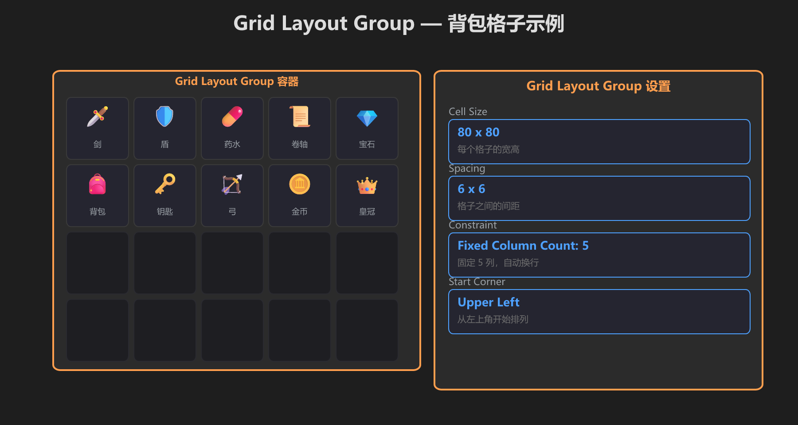
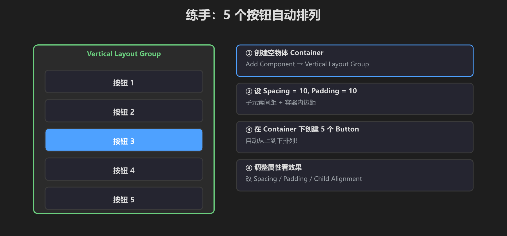

第 10 篇：Layout Groups — 自动排列
手动拖 UI 又累又对不齐？Layout Groups 像 CSS Flexbox/Grid，帮你自动排列。
📐 三种 Layout Group

Horizontal（水平）/ Vertical（垂直）/ Grid（网格）— 分别适用工具栏、列表、背包

一张图看懂 Vertical / Horizontal / Grid 三种自动排列的效果
📏 Vertical Layout Group 属性

Padding、Spacing、Child Alignment、Force Expand — Spacing 控制间距
📦 Content Size Fitter

让容器根据内容自动调整大小 — 配合 Layout Group 使用效果最佳
🎒 Grid Layout 背包示例

Cell Size 80×80, 5 列固定，自动排列成网格
🛠️ 练手：5 按钮列表

空物体加 Vertical Layout Group → 放 5 个 Button → 自动排列
- 创建空物体 Container，Add Component → Vertical Layout Group
- Spacing=10, Padding=10
- 在 Container 下创建 5 个 Button
- 观察自动排列效果
- [ ] 5 个按钮垂直排列
- [ ] 间距均匀
- [ ] 改 Spacing 间距跟着变